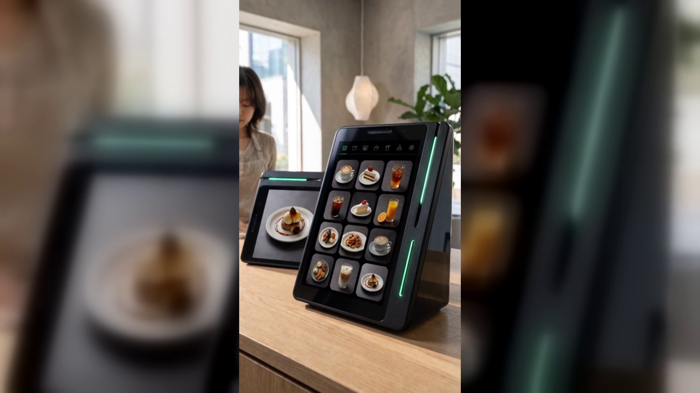

피크타임에 주문이 밀릴 때, 손님이 직접 주문하게 하는 방법
결론부터 말씀드리면, 피크타임에 모자란 것은 손이 아니라 주문을 받는 자리입니다.
주문을 받는 자리가 하나뿐이라 그 앞에 줄이 서는 것입니다.
점심시간이든 퇴근길이든, 매장이 가장 잘 돌아가야 할 시간에 사장님은 가장 자주 멈춥니다.
만들다가 손을 멈추고 주문을 받고, 받아 적고, 다시 만들던 것으로 돌아갑니다.
그 사이에 자리에 앉은 손님이 손을 듭니다. 그쪽으로 한 번 더 걸어갑니다.
줄은 길어지는데 만들어지는 속도는 그대로입니다.
서 있던 손님이 그냥 나가는 것도 대개 이 시간입니다.
바쁜데 매출이 그만큼 늘지 않는 시간이 바로 이때입니다.
카운터 앞에 선 손님도, 자리에 앉은 손님도 주문은 사장님에게 합니다.
주문을 받는 통로가 하나뿐이니 그 통로의 속도가 매장 전체의 속도가 됩니다.
사람을 한 명 더 쓰면 풀리지만 피크타임 두 시간을 위해 사람을 늘리기는 어렵습니다.
그래서 대부분은 사장님이 더 빨리 움직이는 것으로 버팁니다.
이건 부지런함의 문제가 아니라 주문을 받는 자리가 하나뿐인 구조의 문제입니다.
네이버단말기(Npay 커넥트)는 주문을 받는 자리를 둘로 늘립니다.
하나는 미니 키오스크입니다. 카운터 앞에 선 손님이 화면을 보고 직접 주문하고 결제까지 마칩니다.
사장님이 받아 적지 않아도 주문이 들어옵니다.
다른 하나는 N주문입니다. 자리에 앉은 손님이 자리에서 바로 주문합니다.
부르고, 다가가고, 받아 적는 세 동작이 통째로 빠집니다.
결제 수단도 손님이 고릅니다. 카드, QR, 페이스사인, 삼성페이까지 받고
해외 손님이 쓰는 위챗페이·알리페이플러스도 됩니다.
페이스사인은 지갑을 꺼내지 않고 얼굴로 결제하는 방식입니다.
기기는 커피컵 높이의 작은 탁상 기기입니다. 유광 검정에 옆으로 비스듬한 쐐기 모양이고
옆면에 초록색 불빛이 한 줄 들어옵니다.
화면이 두 개라 사장님이 보는 큰 세로 화면과 손님이 보는 작은 화면이 나뉩니다.
카운터 사정에 따라 가로로도, 세로로도 놓을 수 있어서 자리를 잡기가 까다롭지 않습니다.
주문과 결제가 끝나면 손님 쪽 화면에 리뷰 키워드 칩이 뜹니다.
손님이 손가락으로 고르면 네이버 리뷰가 쌓이고 그 자리에서 포인트와 쿠폰이 붙습니다.
스마트플레이스 쿠폰을 연동해 두면 그 쿠폰이 재방문을 부릅니다.
손님이 매장에 머무는 동안 매장 이벤트와 새소식을 손님 쪽 화면으로 알릴 수도 있습니다.
실제로 써 본 이야기가 하나 공개되어 있습니다.
네이버페이 공식 이용후기에 실린 이00 · 카페 대표의 말입니다.
"미니 키오스크로 손님이 직접 주문·결제하고, N주문으로 자리에서 바로 주문받으니 피크타임에도 여유가 생겼어요."
피크타임에 줄이 서는 이유는 사장님이 느려서가 아니라 주문을 받는 자리가 하나이기 때문입니다.
그 자리를 둘로 늘리면 같은 인원으로도 손님이 기다리는 시간이 달라집니다.
미니 키오스크는 서 있는 손님의 주문을, N주문은 앉아 있는 손님의 주문을 맡습니다.
사장님은 만드는 일에 손을 둘 수 있습니다.
네이버 공식 안내에도 앞으로 매장 운영에 도움이 될 기능이 더해질 예정이라고 되어 있습니다
(일부 서비스는 오픈 준비 중입니다).
지금 매장에서 제일 붐비는 시간을 떠올려 보시고, 그때 주문을 받는 자리가 몇 개인지 세어 보십시오.
네이버단말기(Npay 커넥트)는 손님이 직접 주문·결제하고, 자리에서 주문하고,
그 자리에서 네이버 리뷰·쿠폰·적립까지 이어지는 스마트 사인패드입니다.
쓰던 포스는 그대로 두고 연결만 합니다.
· 상담 문의 · A/S 접수 — 평일 9시~20시 / 토·일·공휴일 11시~17시
· 정품 신제품 보증 · 수도권 직영 설치
누리네트웍스 · 결제는 더 쉽게, 매장은 더 스마트하게
🔗 https://nwpos.co.kr?utm_source=youtube&utm_medium=social&utm_campaign=daily7&utm_content=connect-kiosk
#네이버단말기 #네이버커넥트 #Npay커넥트 #미니키오스크 #키오스크 #N주문 #셀프주문 #무인주문 #주문결제 #피크타임 #카페운영 #네이버리뷰 #사인패드 #결제단말기 #카드단말기 #포스기 #포스 #간편결제 #카드결제 #매장운영 #매장관리 #자영업 #소상공인 #자영업노하우 #개인사업자 #가맹점 #누리네트웍스 #Shorts
[SNS아이콘]
[SNS배너]